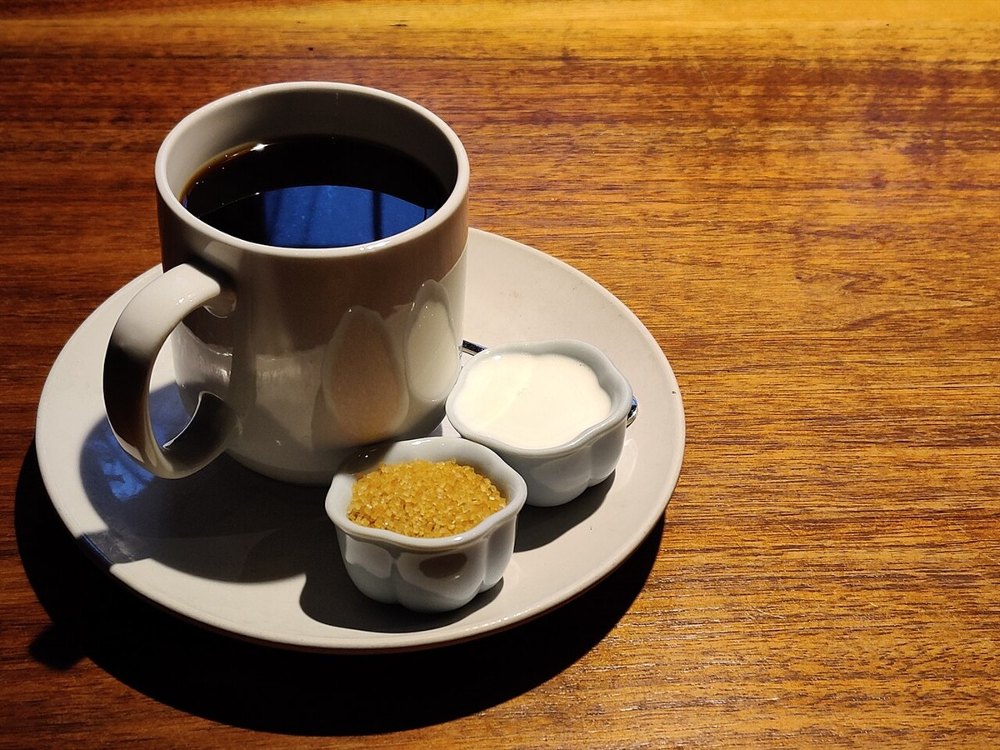
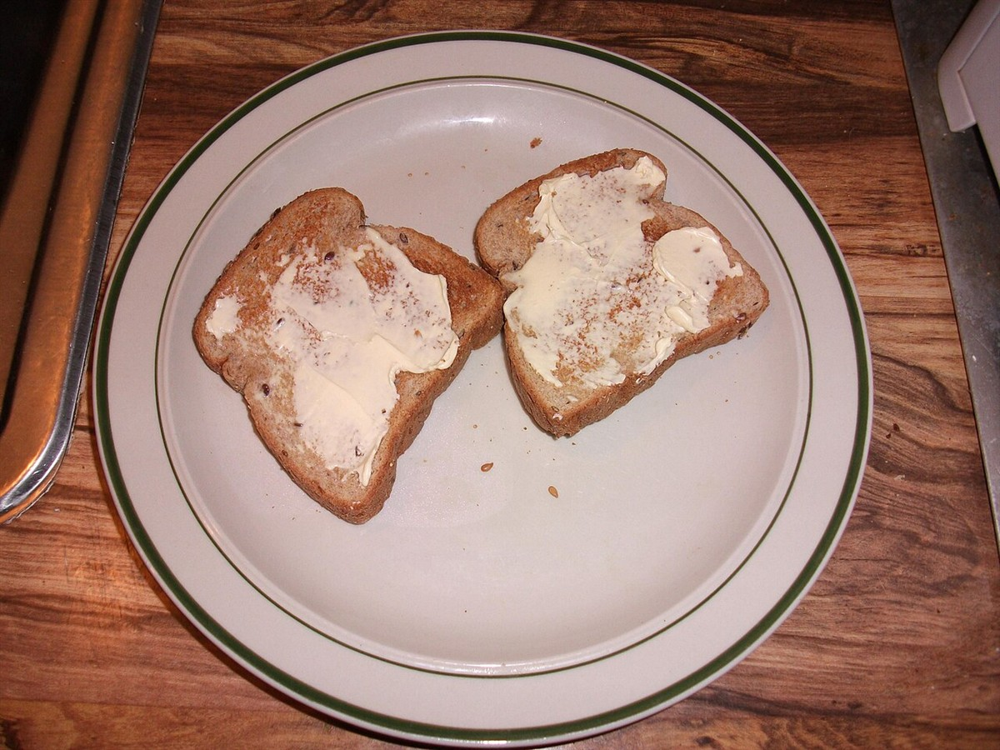
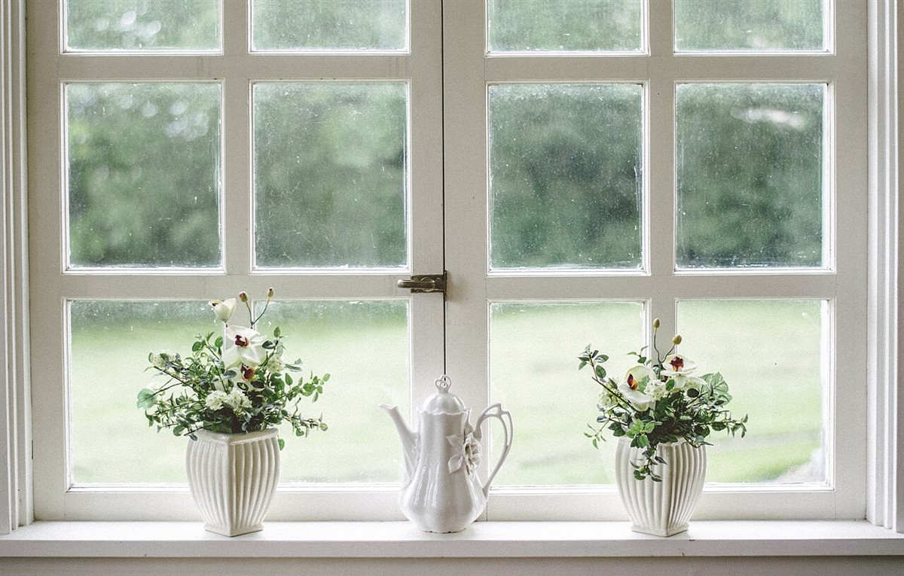
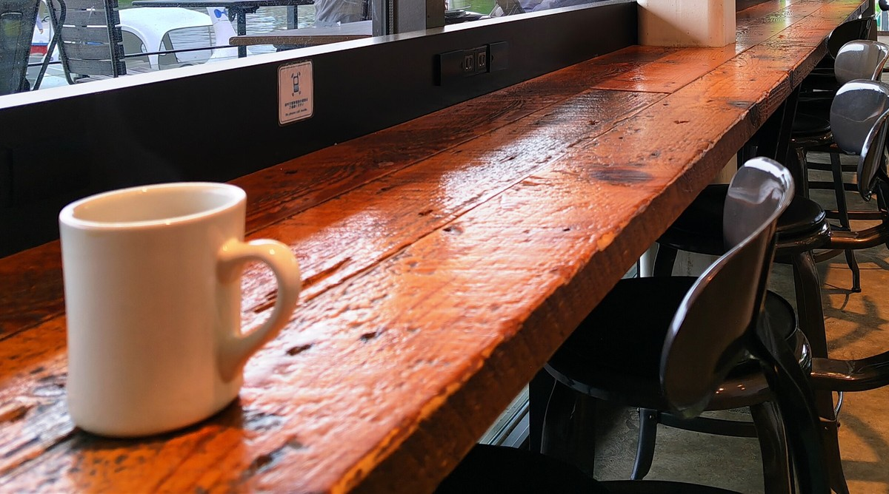

このサイトについて
このページは、喫茶 青い鳥さんのホームページ案として制作側が作成した試作(SAMPLE)です。営業時間・メニュー・料金などの詳細は準備中(お問い合わせください)です。写真はフリー素材のイメージで、お店の実際の様子ではありません。
ひと息の窓辺(制作側の案)
珈琲やトースト、窓からの光。町の喫茶店で過ごすひとときを、イメージ写真で描いてみました。





お店の情報
| 屋号 | 喫茶 青い鳥 |
|---|---|
| 営業時間 | 準備中(お問い合わせください) |
| 定休日 | 準備中(お問い合わせください) |
| 住所 | 茨城県桜川市御領1丁目11 |
| 電話 | 090-3676-0141 |